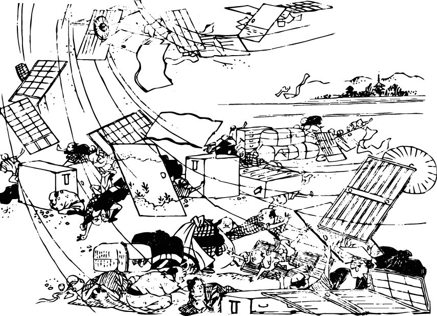
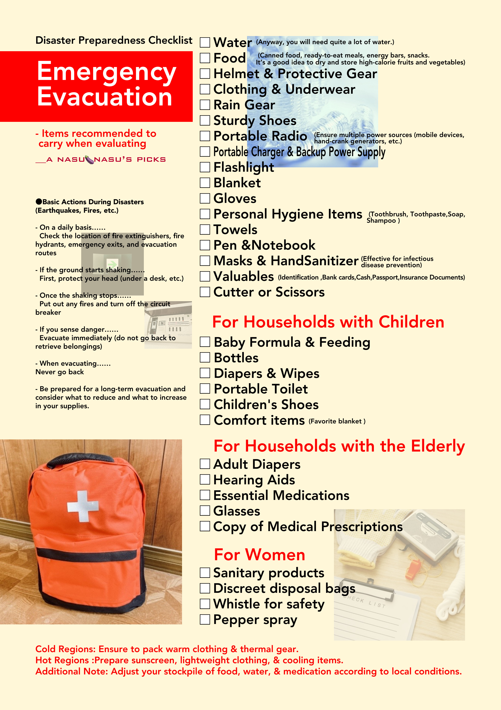

!!Please Beware of Disasters!!

Japan is a country prone to earthquakes.
I wouldn’t exactly call myself a disaster victim, but I have experienced them to some extent. You never know when an earthquake will strike. I’m writing this because I want everyone to be prepared.
I’ve moved several times, but fortunately, I’ve never suffered any damage.
During the Great Hanshin-Awaji Earthquake (in Japan’s Kansai region), I was asleep early in the morning when the ground started shaking violently. I heard the sound of frying pans and pots falling from the kitchen, but I couldn’t fight off my sleepiness and drifted back to sleep. However, since I still watched TV back then, I turned it on and saw that the situation was terrible. It was the first major earthquake I had ever seen since I was born. There were devastating fires, and places I recognized were damaged.
Some of my classmates had walls collapse or their homes destroyed, and I thought, “This is just too much!”
It took time, but the Kansai region pulled through thanks to the help of people from all over the world and Japan, as well as the solidarity of the local community.
Quite some time has passed since then, and I was living in a different place.
One afternoon, I was sitting out in public. Suddenly, the ground started shaking, and it kept shaking for quite a long time; tea spilled from a cup sitting on the table.
“I wonder where the epicenter is? A major earthquake must be happening far away. The vertical and horizontal shaking feels different from the previous earthquake,” I thought, breaking out in a cold sweat.
It was the Tohoku earthquake. I was still watching TV at the time, so I was heartbroken by the footage of the nuclear plant exploding and the devastation of the tsunami.
An acquaintance’s son found himself in a situation where he had to spend days collecting the bodies of people swept away by the tsunami. He told me, “No matter how many bodies I collected, they just kept coming… When will this cleanup ever end?”
Tohoku still bears the scars, but with earthquakes continuing to occur, I feel that people there must still be living in constant anxiety.
Earthquakes have also started occurring all over the country, in places like Kumamoto and Kanazawa.
Before long, X became a place for people to share information, and hashtags like “#AreYouOkayAfterTheEarthquake?” and “#Epicenter” appear in the trends. Both those watching TV and those who aren’t see these posts.
However, in recent years, there have been so many earthquakes that even fairly large ones are quickly swallowed up by algorithms on both TV and the internet, and the news media ends up dominated by trivial entertainment stories. As a result, I feel like more and more people are struggling to know what information to trust. Because earthquakes have occurred so frequently across the country, an abnormal situation has arisen where people have become “indifferent” or say, “I didn’t even know.”
I now live in a different place.
Recently, there was a slight tremor with an epicenter in an area reminiscent of the “Nankai Trough Earthquake.” My neighborhood shook a little. It lasted about 30 seconds.
The “Nankai Trough Earthquake” is the most feared earthquake, capable of shattering the heart of Japan, and measures are being taken to prepare for it. However, what worries me is the presence of volcanoes like Mount Fuji in that area; if they erupted at the same time, it would be the end of Japan. Also, if a tsunami were to hit, I might not survive. The place where I live is old, and I suspect it would collapse.
That is why I want everyone to be prepared on a daily basis. Just because it hasn’t happened yet doesn’t mean it won’t happen. The same goes for volcanoes. I want you to always be mindful and prepare for multiple disasters.
That is why I created this flyer.
I believe you can print it by selecting “Fit to Page.”
Please feel free to use it if you like.
